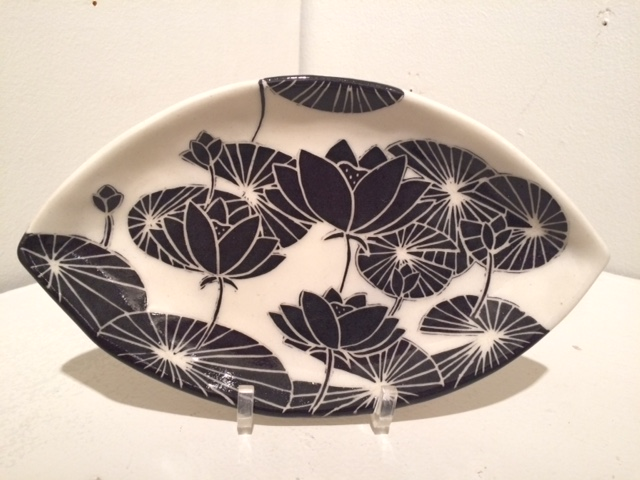
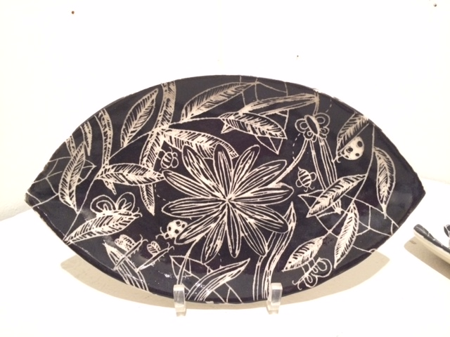
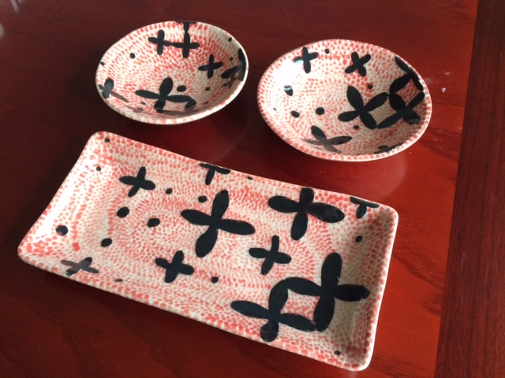
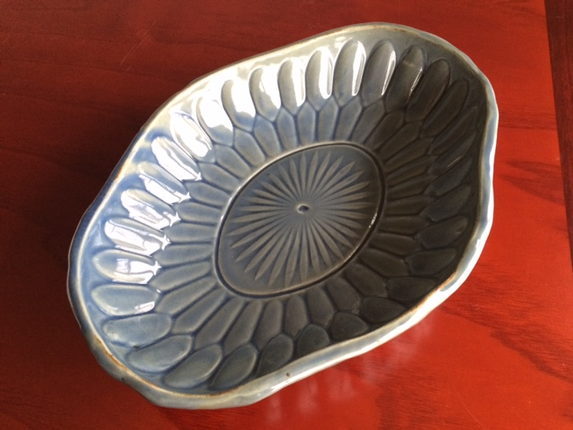

My pottery

Cone-6 hand-built plate, with black slip, sgraffito carving, and
shellac resist.

Cone-6 hand-built plate, with black slip and sgraffito carvings.

Hand-built set of plates. Black slip, with shellac resist. Red-colored
slip applied on bisque-ware, then glaze-fired with cone-6 zinc-less clear.

Hand-built molded dish. Cone-10 fired with Ena's Celadon glaze.